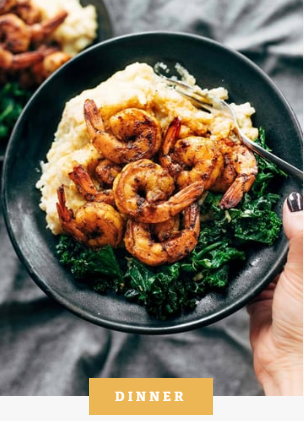
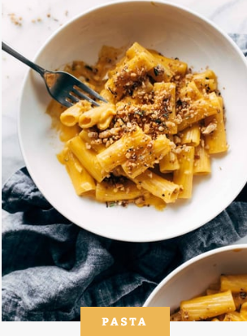
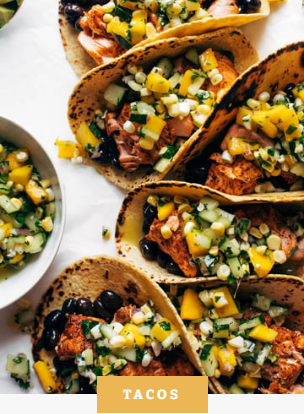
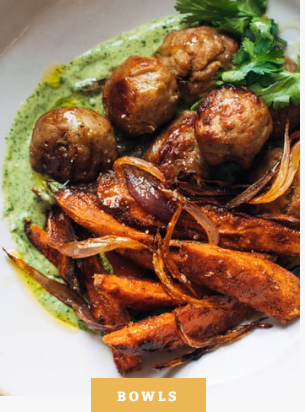
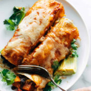
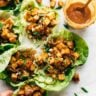
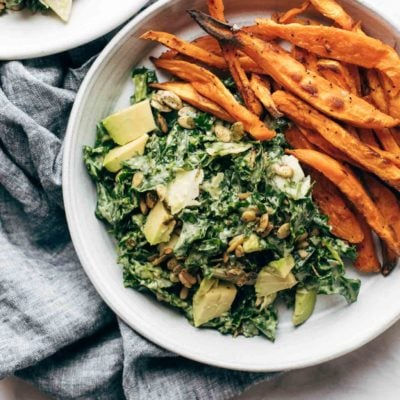
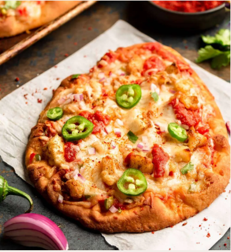
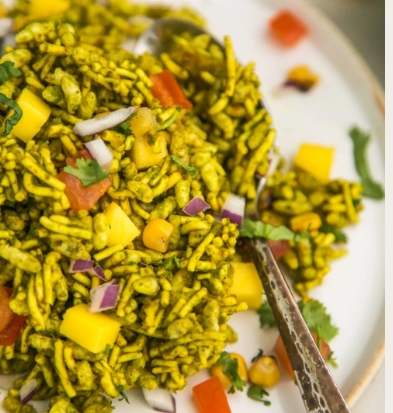

SIMPLE RECIPES MADE FOR
real, actual, everyday life.





Quick&Easy

veg
instant

salads
PANEER PIZZA
INGREDIENTS
- 4 oz cream cheese at room temperature (1/2 block of cream cheese)
- 1 tbsp store bought thecha chutney **
- 12 oz paneer, crumbled into small pieces with hands
- 1 tsp chaat masala
- 2 tsp pav bhaj masala
- 1 tsp salt
- 1/2 red bell pepper, finely diced
- 1/2 green bell pepper, finely diced
- freshly ground pepper
- 2 tbsp canola or vegetable oil (or use spray)
- 1 cup prepared tomato sauce (I used Rao's Arrabiatta)
- 16 oz shredded mozzarella
- 6 Naan
GARNISH
- 1 red onion, finely diced
- 3 tbsp finely chopped fresh cilantro
- 2-3 serrano peppers, finely chopped
- 1 tsp hot and spicy achar masala***
- ¼ tsp salt
DIRECTIONS
- Preheat the oven to 375 degrees.
- In a small bowl, mix the cream cheese and thecha until smooth and set aside.
- In a medium bowl, combine the paneer, chaat masala, pav bhaj masala, salt, bell peppers and freshly ground pepper. Stir to mix the spices evenly.
- In a small bowl, mix the red onion, cilantro, serrano pepper, and achar masala and set aside.
- Spread about 1 tablespoon of the cream cheese mixture on the top of each naan after it’s just slightly cooled. Then top with about 1/4 cup of tomato sauce, handful of cheese, 1/3 cup of paneer mixture, and another handful of cheese. Place in the oven.
- Bake for 6-8 minutes or until the cheese is melted and the bread is crisp. Remove from the oven and top with generous spoonful of onion-serrano mixture on top , and serve.
Corn & Mango Bhel
INGREDIENTS
- 3 cups Bhel mix
- 1.5 cups diced boiled potatoes
- ½ cup tomatoes, diced smal
- ¼ cup red onion, diced smal
- ½ cup diced unripe mango
- ½ cup corn kernels
- ⅛ tsp chat masala
- ¼ cup finely chopped cilantro
GARNISH
- 1 red onion, finely diced
- 3 tbsp finely chopped fresh cilantro
- 2-3 serrano peppers, finely chopped
- 1 tsp hot and spicy achar masala***
- ¼ tsp salt
DIRECTIONS
- Preheat the oven to 375 degrees.
- In a small bowl, mix the cream cheese and thecha until smooth and set aside.
- In a medium bowl, combine the paneer, chaat masala, pav bhaj masala, salt, bell peppers and freshly ground pepper. Stir to mix the spices evenly.
- In a small bowl, mix the red onion, cilantro, serrano pepper, and achar masala and set aside.
- Spread about 1 tablespoon of the cream cheese mixture on the top of each naan after it’s just slightly cooled. Then top with about 1/4 cup of tomato sauce, handful of cheese, 1/3 cup of paneer mixture, and another handful of cheese. Place in the oven.
- Bake for 6-8 minutes or until the cheese is melted and the bread is crisp. Remove from the oven and top with generous spoonful of onion-serrano mixture on top , and serve.